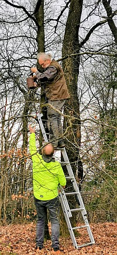

Nisthilfen für den Walderlebnispfad Halle
Da der natürliche Lebensraum vieler Vögel immer weniger geeignete Brutplätze bietet, spendete jetzt unser Verein zehn Nisthilfen.
Unter der fachlichen Anleitung von Hartmut Lüker, vom BUND-Halle, wurden diese im März entlang des Walderlebnispfades, in Halle-Ascheloh, aufgehängt.
Darunter waren 2 Halbhöhlen für Hausrotschwanz, Bachstelze und Grauschnäpper, 4 Nisthöhlen mit ovalem Einflugloch, einem integrierten Katzen- und Marderschutz für Kohlmeise, Blaumeise, Sumpfmeise, Tannenmeise und Haubenmeise, Gartenrotschwanz, Kleiber, Halsbandschnäpper und Trauerschnäpper, Wendehals, Feldsperling und Haussperling, Fledermäuse, sowie 4 weitere Nisthöhlen für Blaumeisen, Sumpfmeisen, Tannenmeisen und Haubenmeisen, eventuell Zaunkönig.
Um die Bäume nicht zu schädigen, wurden eigens Aluminium-Nägel verwendet.

So erfüllen Nistkästen auch im Winter wichtige Aufgaben, denn Meisen, Kleiber oder Siebenschläfer schätzen eine warme Unterkunft.
Als Naturschutzmaßnahme hat die Erhaltung naturnaher Wälder, aber auch Altholzinseln in Wirtschaftswäldern mit alten Baumbeständen immer oberste Priorität!
So sind Nistkästen daher immer nur als Ersatz anzusehen, um die Vögel bei der Wohnungssuche zu unterstützen.
Auch wenn die Begeisterung noch so groß ist, bitte respektieren Sie ihre gefiederten Freunde und kommen Sie den hoffentlich bald besetzten Nistkästen nicht zu nah.